| ・ （社）日本機械学会関西支部 第90期定時総会講演会＠京都大学桂キャンパス (H27.03.16-17) | |||
一去年は2人発表でしたが、今年は1人です。いろいろと今年から変更があって、修士1年はポスター発表、修士2年は修士発表会になりました。OSの発表は博士課程以上です。Shogoの就活宣伝用写真を助教の人が撮ってきました。 |
|||
|
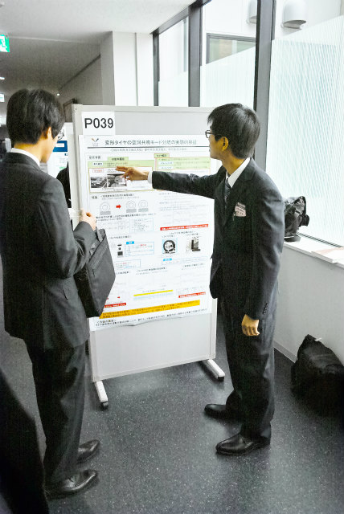
ありきたりな感じがする |
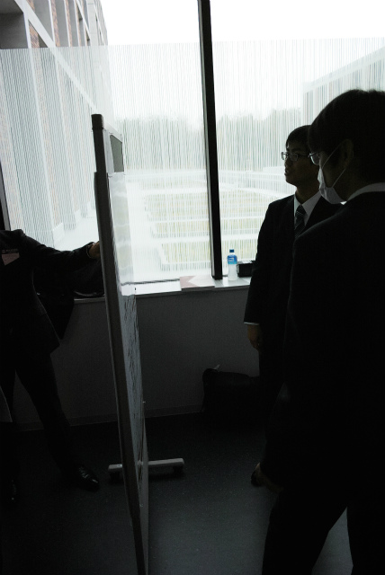
逆光は勝利 | ||
|
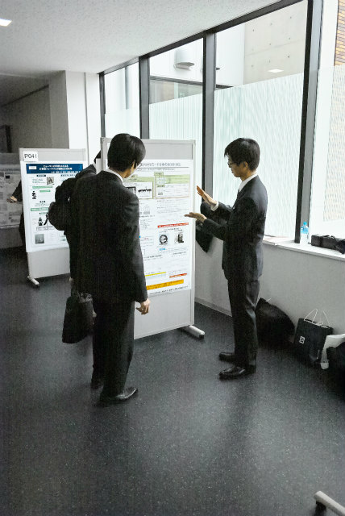
ワニ＞？ |
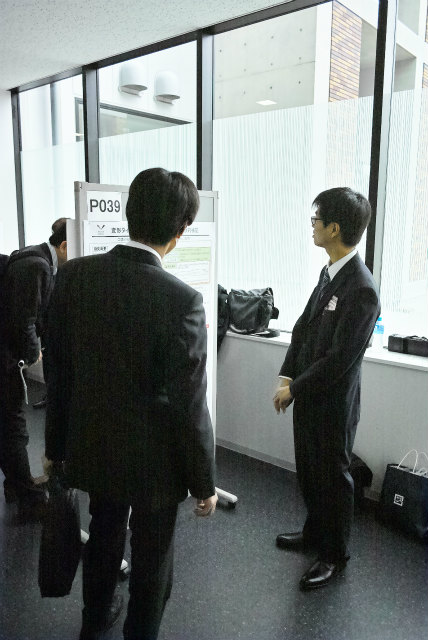
動きがないのもちょっと | ||
|
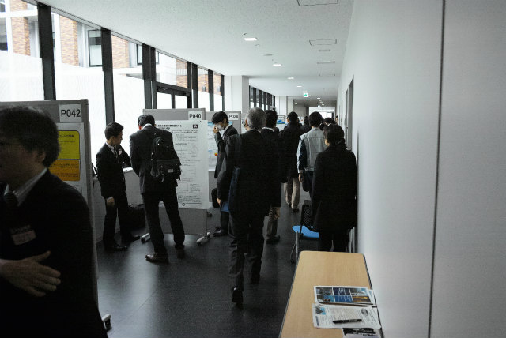
これでは遠すぎてわからない |
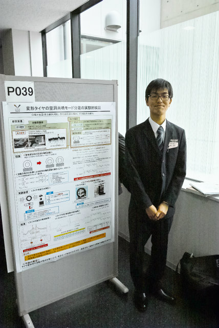
無難なところで | ||
|
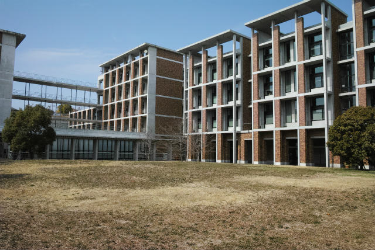
レンガのデザインで統一されているので気持ちよい |
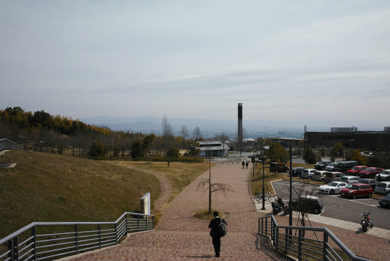
新時計台 | ||
|
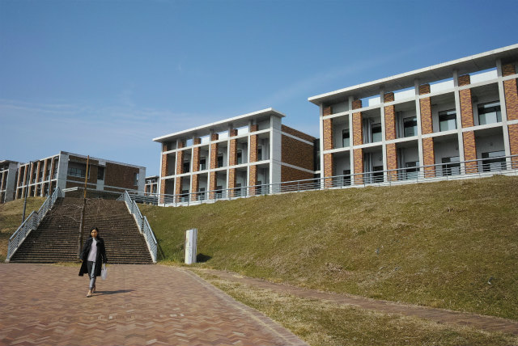
土手に木とか植えるんでしょうか？ |
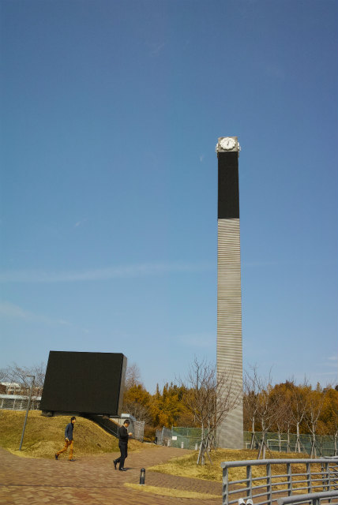
ウチのレインボーより高い | ||
|
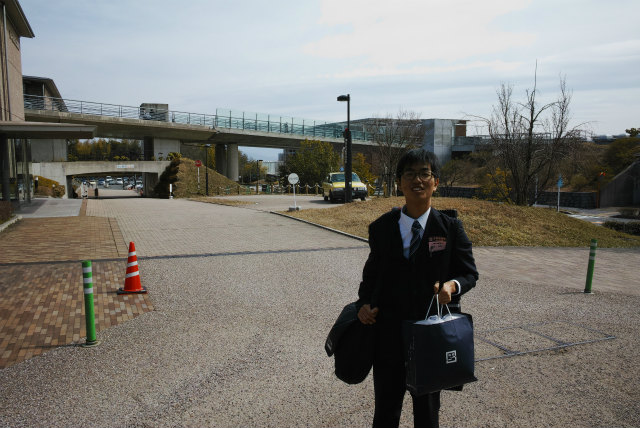
懇親会出てから帰るそうです |
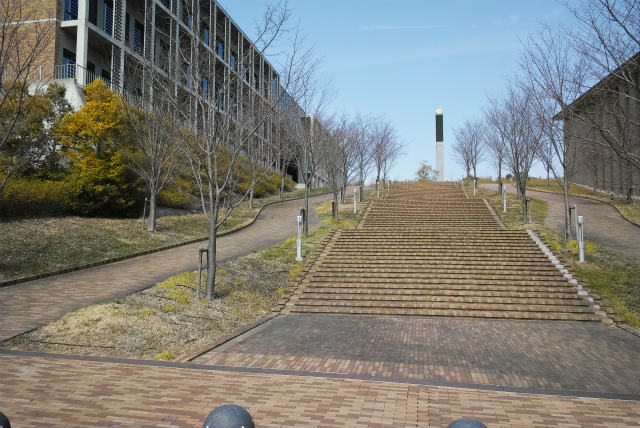
ここが正面っぽい | ||